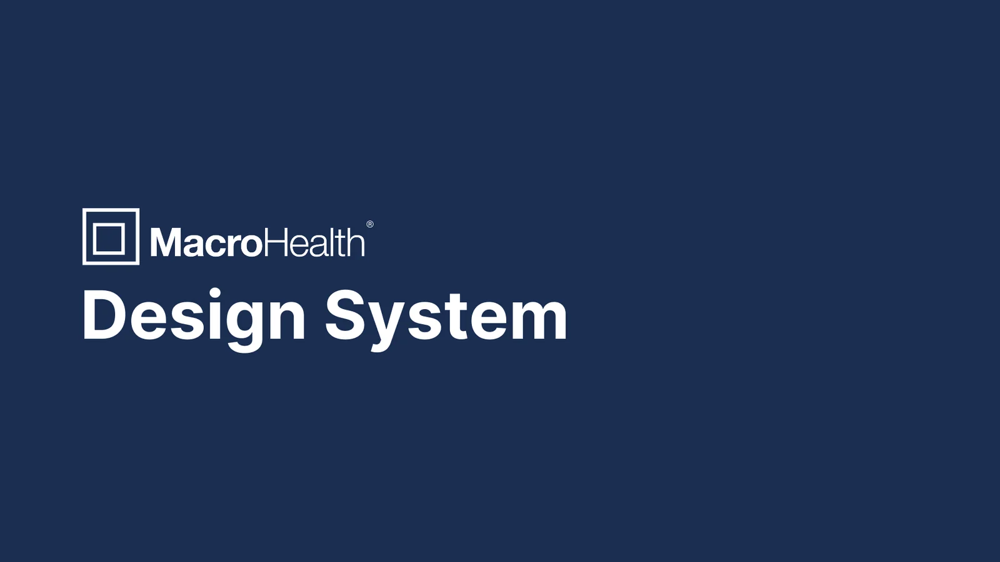
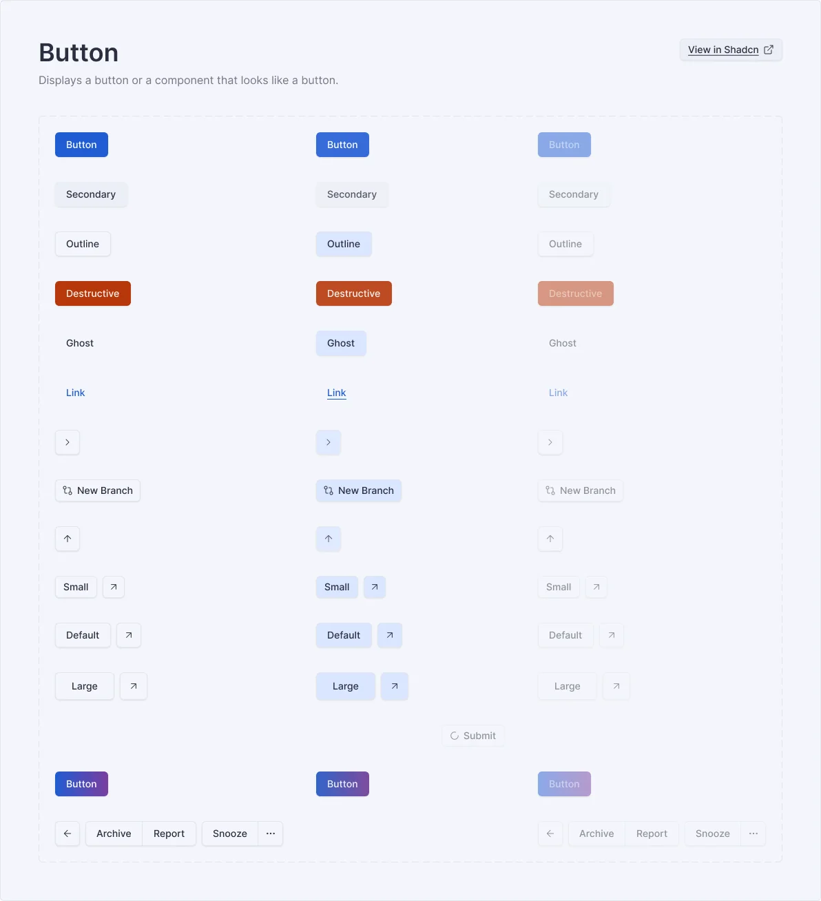
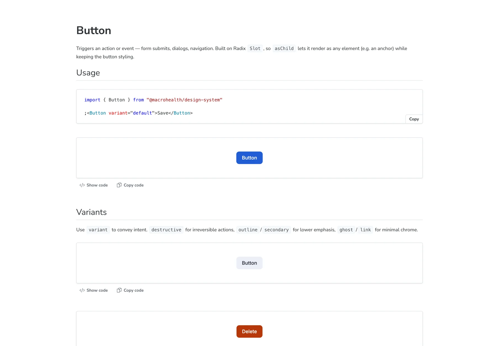
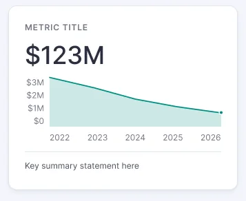
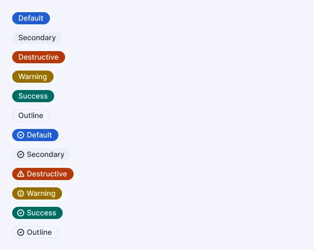
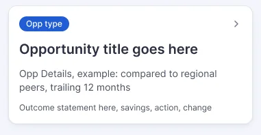

MacroHealth designs in Figma and builds with coding agents, and the agents kept guessing which component a mockup meant. I made the design system machine-readable: every Figma variant maps to a React prop, as data that ships in the package and is served to agents over MCP. Designers keep Figma, engineers keep git, the agent stops guessing.

MacroHealth's marketplace is a React product with a small team: a UX designer, a PM, and frontend engineers who now do a lot of their building through coding agents. The design system is a shadcn-based React library with a matching Figma library, adapted from the shadcn kit and extended with our own patterns. I own the code side; the UX designer owns the Figma side.
A design system used to have one reader: a person opening Storybook or Figma. Ours had two. A designer reads Figma. An agent reads whatever it can find in the repo and the mockup, then writes code. If those two readers see different things, the product drifts, one component at a time.
The question this project answers is simple to state. What does a design system need to look like so that a machine building from a Figma mockup lands on the same component, with the same props, that a human would?
We were drifting in two directions at once. Designers changed tokens and variants in Figma and the code found out weeks later. Agents building pages from mockups got the visual right and the component wrong: hand-rolled markup that looked like a Card instead of the Card, a hex value instead of a token. Every one of those is a future bug and a maintenance cost nobody chose.
The standard answer was behind a paywall. Figma Code Connect, which binds Figma components to code so Dev Mode and agents see real snippets, needs an Organization or Enterprise plan. We're on Professional. The usual plugin route for syncing tokens wanted a paid tier as well, and would have added a second tool to keep in step. Waiting for a plan upgrade wasn't a plan.
Figma variables and variants change; the code library hears about it late, or never.
An agent building from a mockup guesses the component, reinvents it, and hardcodes the mockup's colours.
Code Connect needs a plan tier we don't have, and token-sync plugins would add a second tool to keep in step.
Every element on a product page should be a 1:1 instance of a design-system component. No custom code creep.
The insight that unlocked it: a Figma-to-code binding is not a feature of Figma. It is a small amount of data. "This Figma component set, with this variant axis set to this value, means this code component with this prop." If that data lives next to the code, is reviewed like code, and ships with the code, then any tool can read it, including the one we couldn't afford.
Three rules followed from that and held for the whole project:
"variant": { "fromVariant": "Type",
"map": { "destructive": "destructive", … } },
"disabled": { "fromVariant": "State",
"map": { "disabled": true } }import { Button } from "…/design-system"
<Button variant="destructive" disabled>
Delete
</Button>The team mapped the end-to-end flow on a FigJam board before building anything. Ideas start as Claude artifacts and an HTML prototype to settle the information architecture. The UX designer builds mockups from the Figma library and refines the library when a pattern is missing. I sync tokens and components into code, update the bindings and Storybook, and publish the package together with its MCP server. Whoever builds a product page then reads the mockup through the Figma MCP and resolves each instance through the design-system MCP.
The board also drew the alternative we rejected: treating the Claude artifact as the final spec and extracting its HTML into the repo. It looks faster and ends in the failure mode we were trying to kill: no component match, custom code creep, and every design update becoming a manual re-export.
Tokens live in one JSON file in the repo, and nothing else is a source. Two Figma variable collections feed it: a primitive palette of seven colour families, and a semantic collection with light and dark modes that aliases into the palette. A sixty-line build script turns that JSON into CSS custom properties, a dark-mode block, and a Tailwind theme, so bg-primary exists as a utility because a designer created a variable named primary.
The sync is the same mechanism the component bindings use: a Claude skill driven through the Figma MCP, no plugin, no extra tier. It reads the two collections, diffs them against the JSON, shows the diff, writes the file, regenerates the CSS, and opens a merge request. Two details mattered more than expected. Everything resolves by name, never by ID, because Figma file copies get new IDs and designers duplicate files constantly. And the generated CSS is rebuilt before every dev run and every build, so it cannot drift from the JSON even if someone edits it by hand.
Typography deliberately does not sync. Type roles in code are Tailwind recipes applied inside components, documented once in Storybook. Turning every Figma text style into a token would have created a second system to maintain for no gain.
Each component folder carries a small JSON map beside its code, stories, tests and docs. The map names the Figma component set, says whether the code side is a single component or a composition of sub-components, and translates each Figma variant axis into a prop. Where a Figma axis has no code equivalent, the map says so explicitly in an unmapped ledger instead of pretending.
That ledger turned out to be the most useful part. Figma is a design tool and its data is messy in human ways: a variant misspelled "hhost" for ghost, one axis doing the job of two, visual hover states that are not props. The map carries those facts rather than silently correcting them, so the designer can fix the source and the engineer knows exactly what will change when they do.
We kept real Code Connect files alongside the maps, unpublished. The map is the same information in a format we can use today. If the plan ever changes, publishing them lights up Dev Mode with no rework.
{
"figmaName": "Buttons",
"kind": "single",
"component": "Button",
"import": "@/components/ui/button",
"props": {
"variant": { "fromVariant": "Type",
"map": { "primary": "default", "secondary": "secondary",
"destructive": "destructive", "outline": "outline",
"hhost": "ghost", "link": "link" } },
"size": { "fromVariant": "Type",
"map": { "Size-small": "sm", "Size-large": "lg", "icon": "icon" } },
"disabled": { "fromVariant": "State", "map": { "disabled": true } }
},
"unmapped": {
"typeValues": ["with icon", "loading", "Rounded", "Button group"],
"variantAxes": ["State default/hover: visual states, not props"],
"notes": "hhost is a Figma typo for ghost; fix at source, then update the key."
}
}

A build step compiles the 58 maps into one manifest and the package exports it as a first-class artefact, next to the JavaScript and the CSS. Anyone who installs the design system gets the bindings for free, pinned to the exact version of the components they are using.
On top of that sits a Model Context Protocol server, about 180 lines with no dependencies, exposed as a binary in the package. It has two tools. One lists every component that can be resolved. The other takes a Figma component-set name and the selected variants and returns the import statement, the resolved props, the sub-components, a usage example, and the ledger of anything it could not map. Any agent that speaks MCP can use it. No skill to author, nothing to install beyond the package itself.
For our own team I also wrote two Claude skills that wrap the workflow end to end. figma-to-code reads a mockup through the Figma MCP, walks every instance including nested ones, resolves each through the map, and builds the screen. sync-tokens is the token capture described above. Both are read-only on Figma and both end at a merge request.
→ tools/call resolve_component { "figmaName": "Buttons", "variants": { "Type": "destructive", "State": "disabled" } } ← result { "figmaName": "Buttons", "component": "Button", "import": "import { Button } from \"…/design-system\"", "kind": "single", "props": { "variant": "destructive", "disabled": true }, "unmapped": { "typeValues": ["with icon", "loading", "Rounded", "Button group"], "notes": "hhost is a Figma typo for ghost …" } }
1 The map is the source of truth for bindings. Never invent a component the system already has. 2 Match by component-set name first, node id second. 3 Not in the map? Surface it and offer to add an entry. Never silently reinvent it. 4 Style with semantic token classes. Never hardcode a hex pulled from the mockup. 5 Read-only on Figma. Always. 6 Report the mapping: mockup node → component + props, plus everything unmapped, so the binding is reviewable. 7 Reproduce every instance's full content, recursively. Never flatten, never drop items, never invent placeholders. 8 Icon slots resolve to the icon library. Never fall back to an icon the mockup didn't show.
A binding layer is only useful if it is true. Two audits keep it that way. The first runs locally, with no network, on every commit and in the lint job: it parses each component's source, confirms the map's component is actually exported, and warns when code exposes a sub-component or variant the map doesn't mention. The second runs on a schedule against the Figma API: it reads each component set's real variant axes and reports any axis the map neither binds nor acknowledges. It never blocks a commit, because the Figma file changes on the designer's schedule, not ours. Its warnings are the standing backlog of "Figma is behind here".
I didn't take the audit's word for it. I deliberately deleted one sub-component from a map, pushed, watched the warning appear in the pipeline, and reverted. That commit pair is in the history on purpose.
Releases are boring by design. Merging to the default branch computes a version from the history and publishes the package, so there is no manual bump and no way for an unmerged branch to overwrite what consumers install.
$ node scripts/audit-figma-map-code.mjs figma-map audit — Layer 1 (code ↔ map) — 58 maps scanned no warnings ✓ hard errors: invalid map · component not exported by its import warnings: sub-component in code but not in map variants in code with an empty map and no ledger
The output of the workflow is a product page built only from library imports, with every prop resolved through the map and every colour coming from a token. Those screens are internal, so they stay out of this case study. What I can show is what makes that output possible: every component has a Storybook page with usage, variants and a props table, so the same system an agent reads as JSON is readable by a person as documentation.
That mattered to the UX designer as much as the map mattered to the agent. Storybook became the visual QA for every sync, and any Figma variant a designer can see has to have a story that shows it. Our own patterns went through the same path as the shadcn base: designed in Figma, mapped, built, documented.




The whole system lives in one repository. Fifty-five components, each with its code, map, stories, tests and docs. The token pipeline from Figma variables to generated CSS. Both audits, the compiled manifest, the MCP server, and the two skills that drive the workflow. The package publishes itself on merge. A designer can change a token in Figma and see it as a reviewable diff in a merge request the same day. An agent can build a page and be told, per instance, exactly what to import.
The part I'm proudest of is the part nobody sees: the workflow degrades honestly. When Figma is ahead of code, the audit says so. When code is ahead of Figma, the ledger says so. When a variant has no code meaning, the map says so, and the agent emits a plain component and flags it instead of inventing one.
The MCP protocol is hand-rolled. It was the right call for a zero-dependency proof, and it works. For production I'd swap the framing and handshake for the official SDK and keep the two tools exactly as they are.
One map per folder was an assumption that broke. Tables and tabs needed several maps in one folder for their sub-components. The audit sees them all, but the manifest builder still picks one. That is a small fix with a large lesson: the moment a layout convention becomes an implicit contract, write the test for it.
Figma's messiness is the interesting part. The overloaded axis, the typo, the copied files with new IDs. I spent more time designing how the system tolerates those than on any single component, and it was the time that paid off. A binding layer that only works on a clean file only works in a demo.